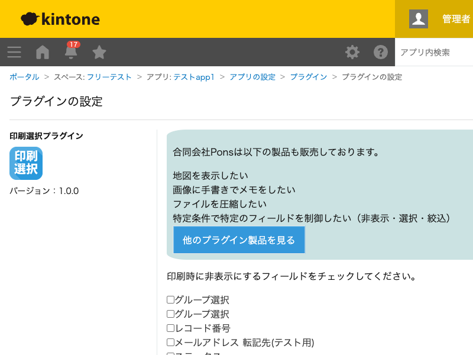

GovAppsプラグイン 安全性を確認できる無料kintoneプラグイン集
レコードの印刷画面を開いたときに、あらかじめ設定画面でチェックしておいたフィールドを 非表示にするプラグインです。印刷帳票に出したくない項目(内部管理用メモなど)だけを、 通常の画面表示はそのままに、印刷時だけ隠せます。
担当者メモや社内向けステータスなど、画面上では確認したいが取引先に渡す印刷物には 含めたくないフィールドを、印刷時だけ非表示にできます。フィールド自体を削除したり アクセス権を変更したりする必要はありません。
印刷画面を開くと「印刷時に特定のフィールドを隠しますか？」という確認が表示されます。 通常の帳票としてすべての項目を印刷したい場合と、指定フィールドを隠した簡易版を 印刷したい場合とを、都度その場で選べます。
kintoneセキュアコーディングガイドラインに沿って、本番運用中の実装をリポジトリに 取り込む際に確認しています。特に重要な点は次のとおりです。
GET /k/v1/app/form/fields.json)は、必ず
kintone.api()(kintone自身への呼び出し専用の内部ラッパー)経由のみで
行っています。外部サーバーへの通信は一切行わず、外部ライブラリも使用していません。innerHTMLではなくinnerTextで行っており、
チェックボックスのidにはkintoneが発行するフィールドコード(英数字・
アンダースコアのみ)しか使わないため、DOMが意図しない構造として解釈される余地が
ありません。kintone.app.record.setFieldShown()というJavaScript
APIのみで行っており、kintone内部のDOM構造やid/class属性には依存していません。次回改修時の課題として、フィールド一覧取得をkintone.app.getFormFields()
(JavaScript API)へ置き換えることと、各JSファイル先頭への'use strict'明示を
検討事項として記録しています(現状の動作に支障はありません)。詳細な確認項目は下記
GitHubのチェックリストに全項目を掲載しています。

このプラグインは、設定画面を開くたびにフィールド一覧取得API(GET
/k/v1/app/form/fields.json、内部向けラッパーのkintone.api()経由)を
1回実行します。レコード印刷画面の表示時にはkintoneへのAPI実行はありません
(kintone.app.record.setFieldShown()はブラウザ内の表示制御のみで完結します)。